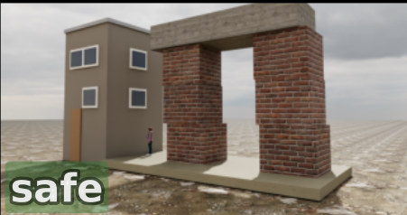
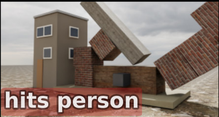
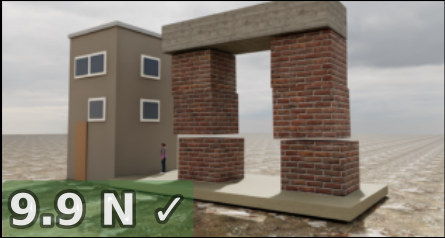

Comparison with language models and a robot policy
Language models reading the same scene graph
A test scene: a small bridge (two piers of three blocks and a beam) stands on a skid next to a house, and a person sits beside it. A gripper pulls the skid out. A pull is safe when the bridge does not fall on the person. The skid weighs 2.54 kg (heavy) or 0.74 kg (light); the gripper pulls with 9.9 N or 19.7 N from 0.25 s until it lets go at 1.10 s.
| Forwardheavy skid (2.54 kg), 9.9 N pull | Counterfactual: a stronger pullheavy skid (2.54 kg), 19.7 N pull | Counterfactual: a lighter skidlight skid (0.74 kg), 9.9 N pull | Intervention during the motionlight skid, 9.9 N pull that reverses at 0.55 s | Backward: which pull produced this end state?start and end state given, the horizontal force hidden | |
|---|---|---|---|---|---|
| PhysXground truth |  the bridge collapses and hits the person |  safe: the skid comes out and the bridge stays standing |  safe: the skid comes out and the bridge stays standing |  the bridge collapses and hits the person |  true force 9.87 N |
| NeuWorld+Regscene graph and action |  hits the person |  safe |  safe |  hits the person |  9.9 N |
| Claude Opus 5.5scene graph as text, two calls | safe hits | hits hits | hits hits | hits hits | 4.6 N 3.9 N |
| Claude Fable 5.2scene graph as text, two calls | hits hits | safe hits | hits safe | hits hits | 10.0 N 4.8 N |
Correct: NeuWorld+Reg 5 of 5 tasks, Claude Opus 5.5 3 of 10 answers, Claude Fable 5.2 6 of 10 answers. Frames show the end of each motion. Claude Opus 5.5 and Claude Fable 5.2 read the same scene graph as JSON text (shape, size, pose, mass, friction and restitution of every object, the joints and the gripper's action). No tools. Each prompt is sent twice per model, each time in a new session without files or memory, with the system prompt "You are a helpful assistant."
The prompts sent to the language models
forward (heavy skid, 9.9 N pull)
Below is a rigid-body physics scene, given as a scene graph (JSON). Units: m, s, kg; Z is up; quaternions are w,x,y,z. Contact friction and restitution coefficients combine by multiplication. Gravity is 9.81 m/s^2 downward. The scene: a board ('actor') lies on a plate ('platform', on a stiff vertical spring). On the board stand two columns of three blocks ('pier0_left' ... 'pier2_right') with a beam ('beam') across their tops. A gripper ('actuator') is rigidly attached to the board's front face. A person ('person', not movable) sits next to the pile on the -x side; the house walls ('house_wall', 'house_side') are fixed. Action: the gripper applies a constant force of 9.87 N along +x and 25.72 N upward (through the combined centre of mass of gripper and board) from t = 0.25 s until it lets go at t = 1.10 s. Question: after the motion, does the pile stand (the board comes out and the two columns and the beam drop onto the plate and stay stacked), and does any falling block or the beam hit the person? Scene graph (masses are exact): [the scene graph as JSON] End your reply with exactly one line: ANSWER: STANDS_SAFE or ANSWER: COLLAPSES_HIT or ANSWER: COLLAPSES_SAFE
other forward prompts
They differ only in the skid's mass and the forces.
intervention
Adds one sentence to the action: "At t = 0.55 s the gripper's force changes to -9.87 N along x (vertical 8.63 N) and stays so until it lets go."
backward
Leaves out the horizontal force, lists the position and orientation of every moving body at the start and at 4.0 s, and ends with "Question: what horizontal force did the gripper apply? End your reply with exactly one line: FORCE_N: <number>".
A planner that tests its actions before acting
A language model can also act as the planner and test its actions before acting. Claude Opus 5.5, used off the shelf, plans on 206 tasks in 41 test scenes; the chosen action is always run in PhysX to check the goal. In one shot it meets the goal in 37% of the tasks. With up to three attempts, seeing the simulated outcome of each failed attempt, it meets the goal in 59% when the outcomes come from PhysX and in 51% when they are predicted by NeuWorld+Reg. On the planner's first actions NeuWorld+Reg's pass or fail verdict agrees with PhysX in 82% of cases, and judging one action takes it 0.16 s on one GPU against 53 s for PhysX on one CPU core.
Planner results on the 206 tasks
Share of 206 tasks whose goal check passes in PhysX (Table 9 of the supplementary).
| Planner | 1 action | Up to 3 tries |
|---|---|---|
| Do nothing | 34.0% | - |
| Random action | 35.0% | - |
| Recorded actions (upper bound) | 68.9% | - |
| Claude Opus 5.5, tries predicted by NeuWorld+Reg, run 1 | 37.4% | 51.0% |
| Claude Opus 5.5, tries predicted by NeuWorld+Reg, run 2 | 42.2% | 48.5% |
| Claude Opus 5.5, tries simulated in PhysX, run 1 | 37.4% | 58.7% |
| Claude Opus 5.5, tries simulated in PhysX, run 2 | 42.2% | 61.7% |
A zero-shot robot policy
pi0.5-DROID runs zero-shot in the same 41 test scenes. A Franka arm replaces the scene's tool, every object, mass and material is unchanged. The policy sees its camera images and an instruction that states the end state of the recorded motion, alone or with the motion described in words. Each scene is attempted twice per instruction; an attempt lasts 30 s.
All 41 scenes: how often the policy moves the right object and reaches the end state
pi0.5-DROID, zero-shot, on the 41 test scenes (Table 14 of the supplementary). Moved: attempts in which the object the recorded action acts on is moved. Reached: attempts that reach the end state, on the 34 scenes (68 attempts) where it can be reached.
| Recorded action | Scenes | End state: moved | End state: reached | End state + motion: moved | End state + motion: reached |
|---|---|---|---|---|---|
| Push by a tool | 13 | 13 of 26 | 0 of 22 | 8 of 26 | 0 of 22 |
| Throw at the start | 9 | 3 of 18 | 0 of 14 | 5 of 18 | 0 of 14 |
| Hold, then let go or throw | 17 | 17 of 34 | 3 of 28 | 15 of 34 | 3 of 28 |
| Release at the start | 2 | 0 of 4 | 0 of 4 | 0 of 4 | 0 of 4 |
| All | 41 | 33 of 82 | 3 of 68 | 28 of 82 | 3 of 68 |
The policy tile is filmed from the recording's camera in the plain look of the policy's simulation (no walls); the PhysX and NeuWorld tiles are the path-traced render of the same scene. NeuWorld is not asked the same question here: its tile is the forward prediction of the recorded action, to show the motion the policy would have to cause. Four attempts picked by hand: a wrong manipulation, two attempts that never touch the object the recording acts on (the most common outcome) and one of the three successes. The remarks on what the policy does are observations by eye.